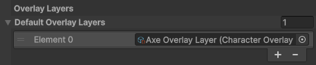

Character Overlay Layer Usage
This page explains how to apply Overlay Layers to a character using a Character Renderer Component.
Overlay Layers can be applied in two ways:
- Automatically when the character loads
- Dynamically at runtime through code
Applying Overlay Layers Automatically
Default Overlay Layers
Every Character Renderer component contains a Default Overlay Layers list.
Any Overlay Layer in this list is automatically applied when the character is loaded.

This is useful when a character should always spawn with specific visual elements.
Overlay Layers are applied in the order listed.
Caution
Overlay Layers must use the same Character Type as the character they are applied to.
If the Character Types do not match, the Overlay Layer will not be applied.
Managing Overlay Layers Through Code
Overlay Layers can also be added, removed, or reordered at runtime.
All functionality is provided through the OverlayLayerHandler, which exists on every Character Renderer component.
This handler manages all overlay layers currently applied to the character.
Accessing the OverlayLayerHandler
Every Character Renderer component exposes the handler through the OverlayLayerHandler property.
Example reference:
CharacterRenderer.OverlayLayerHandler
Once accessed, the handler can be used to manager Overlay Layers.
Adding an Overlay Layer
Adds a new Overlay Layer to the character.
AddOverlayLayer(CharacterOverlayLayerSO overlayLayer)
Behavior
- Instantiates the Overlay Layer
- Adds it to the end of list of active Overlay Layers
- Initializes the Overlay Layer
If the same Overlay Layer is added multiple times, duplicates will be created.
Example
characterRenderer.OverlayLayerHandler.AddOverlayLayer(overlayLayer);
Removing an Overlay Layer
Removes an overlay Layer from a character.
RemoveOverlayLayer(CharacterOverlayLayerSO overlayLayer)
Behavior
- Searches for the first instance of the Overlay Layer
- Removes it if found
If multiple instances of the same overlay layer exist, only the first instance is removed.
Example
characterRenderer.OverlayLayerHandler.RemoveOverlayLayer(overlayLayer);
Changing Overlay Layer Order
Overlay Layers are rendered based on their GameObject position in the hierarchy
You can change the position of an Overlay Layer using:
ChangeOverlayLayerIndex(CharacterOverlayLayerSO overlayLayer, int newIndex)
Behavior
- Finds the Overlay Layer
- Moves it to the specified index
- Updates the GameObjects position in the hierarchy
Example
characterRenderer.OverlayLayerHandler.ChangeOverlayLayerIndex(overlayLayer, 1);
If the index is outside the valid range, the value is clamped automatically.
Example Script
The following example demonstrates adding an Overlay Layer and moving it to a specific position.
using BlazerTech.CharacterManagement.Components;
using UnityEngine;
using UnityEngine.InputSystem;
public class AddOverlayLayerOnPress : MonoBehaviour
{
[SerializeField] CharacterRendererBase characterRenderer;
[SerializeField] CharacterOverlayLayerSO overlayLayer;
void Update()
{
if (Keyboard.current.digit1Key.wasPressedThisFrame)
{
characterRenderer.OverlayLayerHandler.AddOverlayLayer(overlayLayer);
characterRenderer.OverlayLayerHandler.ChangeOverlayLayerIndex(overlayLayer, 1);
}
}
}